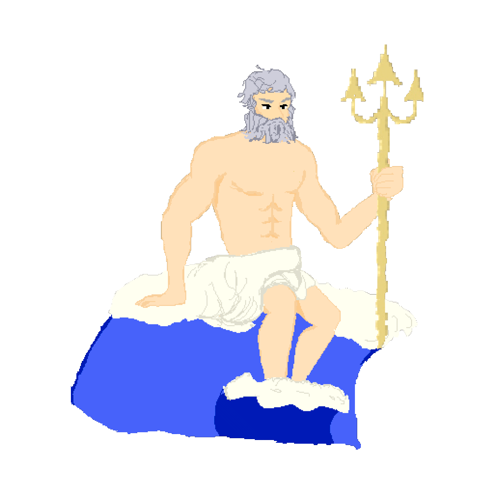
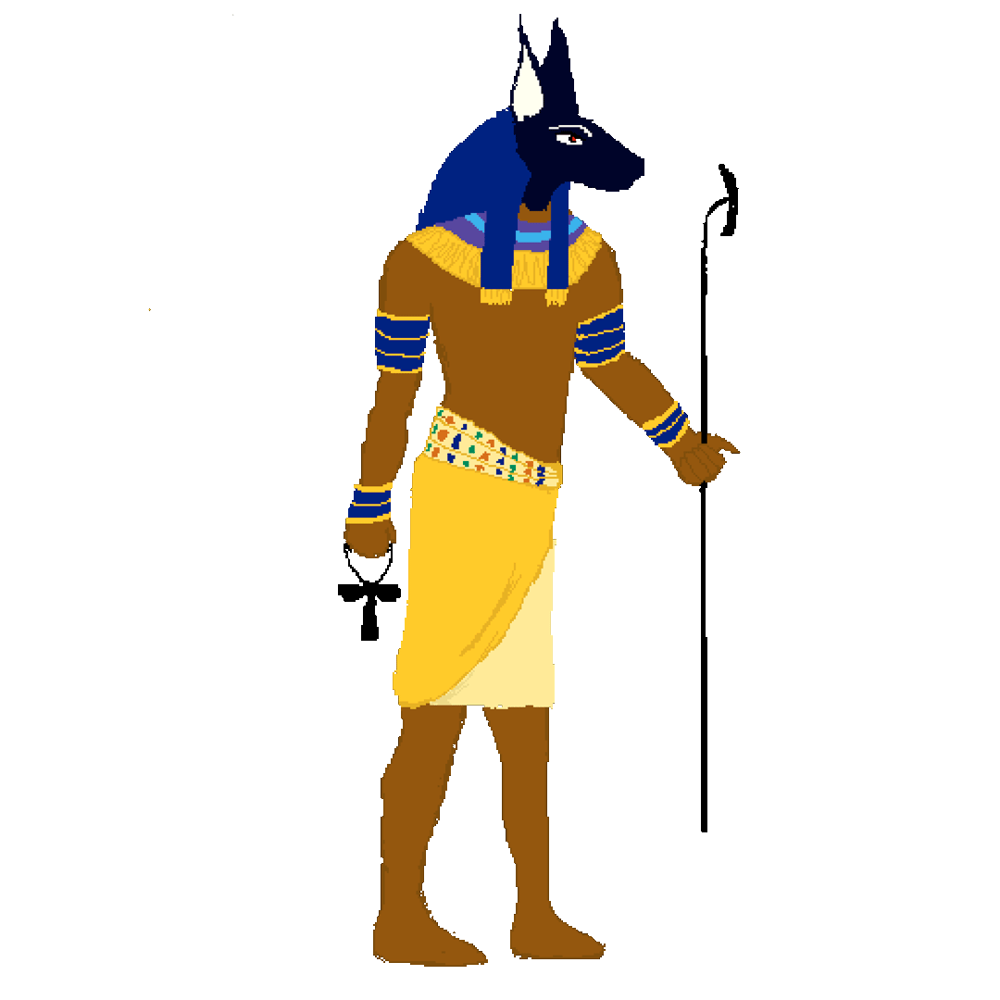
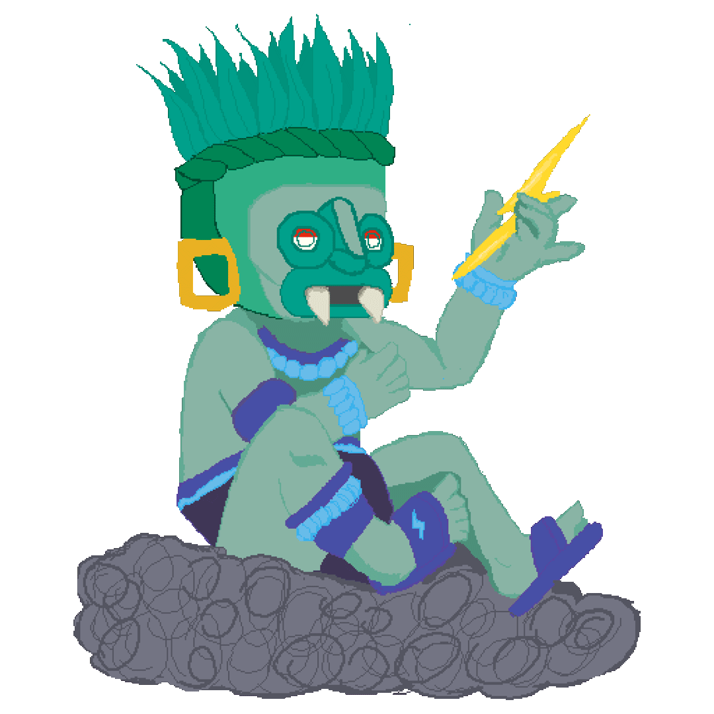
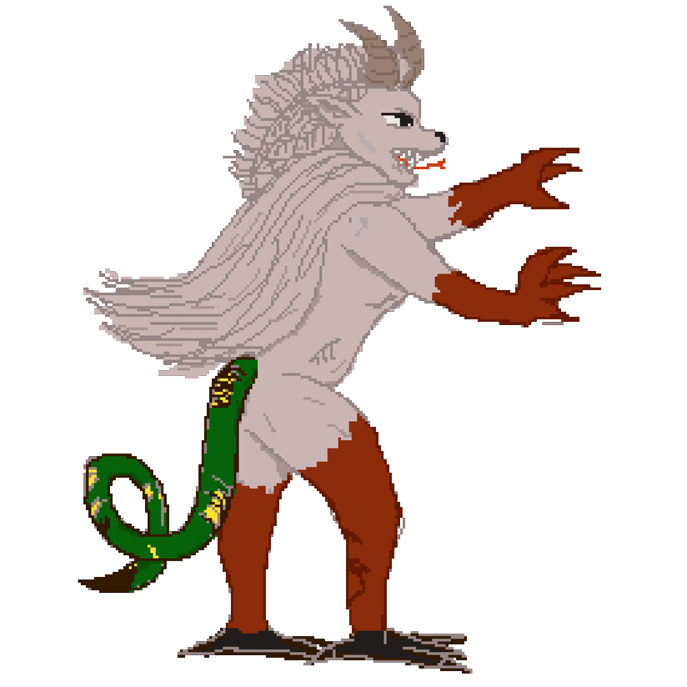

TIMELOOT
SOBRE EL JUEGO
TIMELOOT es un videojuego en el que el jugador encarna a una arqueóloga que descubre una máquina del tiempo y viaja al pasado para robar todas las reliquias que hoy consideramos históricas, antes de que sean descubiertas. El objetivo es claro: llenarse de dinero.
Sin embargo, el camino no va a ser tan fácil. En cada época se va a encontrar con distintos adversarios y obstáculos que van a poner en riesgo su misión.
DESARROLLO
El juego fue ideado y desarrollado por mis compañeras Nina Storchi, Martina Rodríguez Justo y yo. Entre las tres nos encargamos de cada parte del juego: creación de mecánicas, diseño de niveles, personajes, música y programación. Fue pensado originalmente para una máquina arcade, pero igualmente puede jugarse en computadora.




EL JUEGO
Si estás en compu podés probar nuestro juego. En celu lamentablemente no se puede jugar :(